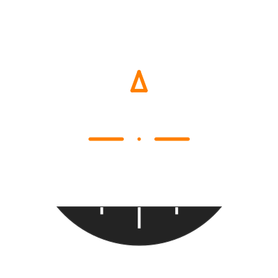
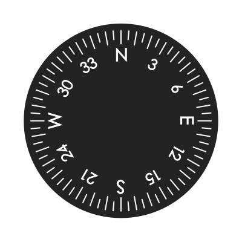
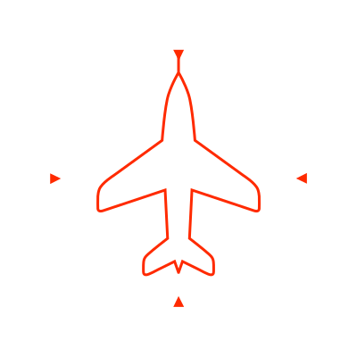

<link rel="import" href="../../bower_components/polymer/polymer.html">
<dom-module id="gs-indicator">
  <template>
    <style>
      /* Global block of an indicator*/
      div.instrument {
        width: 250px;
        height: 250px;
        position: relative;
        display: inline-block;
        overflow: hidden;
      }

      /* The box containing any element of an indicator */
      div.instrument .box {
        position: absolute;
        top: 0;
        left: 0;
        width: 100%;
        height: 100%;
      }

      /* Default transformations */

      div.instrument.attitude div.roll {
        transform: rotate(0deg);
      }
      div.instrument.attitude div.roll div.pitch {
        top: 0%;
      }
      div.instrument.heading div.yaw {
        transform: rotate(0deg);
      }
      div.instrument.vario div.vario {
        transform: rotate(0deg);
      }
      div.instrument.speed div.airspeed {
        transform: rotate(90deg);
      }
      div.instrument.altimeter div.pressure {
        transform: rotate(40deg);
      }
      div.instrument.altimeter div.needle {
        transform: rotate(90deg);
      }
      div.instrument.altimeter div.needleSmall {
        transform: rotate(90deg);
      }

    </style>
    <div id="indicator_header">
      <h3>Indicator</h3>
    </div>
    <div id="flight_indicator">
      <div class="instrument attitude">
        
        <div class="roll box">
          
          <div class="pitch box">
            
          </div>
          
        </div>
        <div class="mechanics box">
          
          
        </div>
      </div>
      <div class="instrument heading">
        
        <div class="heading box">
          
        </div>
        <div class="mechanics box">
          
          
        </div>
      </div>
      <div class="instrument airspeed">
        
        
        <div class="speed box">
          
        </div>
        <div class="mechanics box">
          
        </div>
      </div>
      <div class="instrument vario">
        
        
        <div class="vario box">
          
        </div>
        <div class="mechanics box">
          
        </div>
      </div>
    </div>
  </template>
  <script src="gs-indicator.js"></script>
</dom-module>
